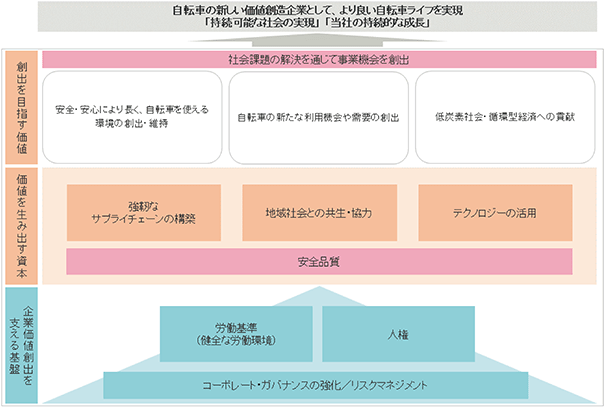
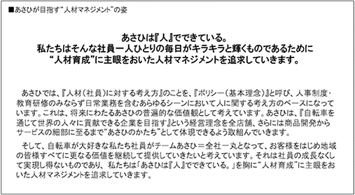
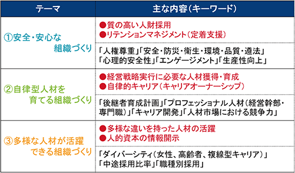
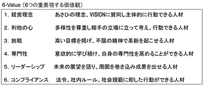
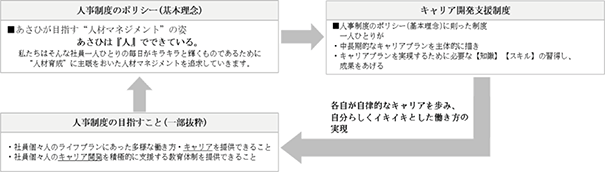
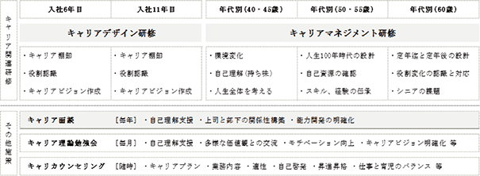

文中の将来に関する事項は、当事業年度末現在において当社が判断したものであります。
(1) 会社の基本経営方針及び経営戦略
当社は『私たちは、自転車を通じて世界の人々に貢献できる企業を目指します。その企業目的に賛同し、参画するすべての人々が、豊かな人生を送れることを目指します。』という経営理念及び「あさひVISION2025」の実現を目指した行動計画に基づき、以下の方針を掲げております。
①全国各地への出店を進めるとともに、地域特性を活かした品揃えや、自転車をご利用されるシーンに合わせたライフスタイル提案型の展示を行なうなど、お客様のニーズに合わせた店舗展開をしてまいります。
②インターネット通信販売では、自社の「公式オンラインストア」に加え、「Yahoo!店」「楽天市場店」を展開し、未出店地域のお客様への対応に力を入れております。また、地域密着型のリアル店舗との融合による「ネットで注文・お店で受取り」サービスを展開し、より身近に、より便利に自転車を提供できることを目指し、OMO戦略（注）の強化に取り組んでいます。
③自社ブランド商品や当社が日本総販売代理権を有する「ルイガノ」「ガノー」などの海外スポーツサイクルブランドを中心に国内販売店に対して商品卸事業を行なっています。
④商品戦略では、お客様のニーズをつねに汲み取り「確かな品質で値ごろ感のある商品」を目指し、企画・開発に取り組んでおります。また、品質管理につきましては、工場、物流倉庫、店頭の三段階での品質検査を行なうなど、商品のさらなる安全性の強化・向上を実現してまいります。
これらに基づき、今後も自転車専門販売店チェーンとして、世界の人々の自転車ライフの向上に努めてまいります。
（注） Online Merges with Offlineの略。ECと店舗が融合して、情報入手から購入、利用までをお客様の体験価値としてご提供する仕組み。
①年間出店数
マーケティング機能の充実を図りながら、毎期15から20店舗を目処とした新規出店のペースを維持し、お客様のさらなる利便性の向上に努めてまいります。
②自社ブランド商品構成比率
お客様にとって最適な品揃えをコンセプトに、店舗におきましては自社ブランド商品と他社ブランド商品の品揃え構成比率を各50％前後に保っています。
③対売上高営業利益率
当社は自転車及び自転車関連商品販売が事業の大半を占めるため、本業の収益性が明確に表れる対売上高営業利益率を重視しており、８％を当面の目標とし、一層の効率的な運営による営業利益率の向上に努めてまいります。
今後のわが国経済の見通しは、国内消費の回復が期待されるものの、原材料価格の高止まりや海外における地政学的リスク、中国経済の先行き懸念など、引き続き見通しにくい状況が続くと想定しております。自転車業界では、直近２年間で大幅に自転車の輸入台数が減少したことや、物流の2024年問題、EC市場拡大など、様々な環境の変化が見込まれます。
このような経営環境の中で、当社では、単に商品を販売するだけでなく購入時の楽しさや自転車に乗る楽しさを総合的に提供することで、お客様お一人おひとりのより充実した自転車ライフをサポートし、誰もが安全・安心に自転車を楽しめる環境を創り上げてまいりたいと考えております。その基本方針のもと、中期経営計画「あさひVISION2025」に沿った取組みを進めてまいります。
中期経営計画「あさひVISION2025」における以下の４つの重点戦略を着実に推進します。
①「お客様との関係性強化（CRM強化）」
②「既存店の活性化」
③「新しい店舗スタイルの開発」
④「事業領域の拡大」
そのために、その前提となる「デジタル・IT」「物流」「ブランディング」の３つの成長基盤を引き続き強化してまいります。
・「デジタル・IT基盤の強化」
デジタル・ITを活用し、お客様お一人おひとりに合わせ快適な自転車ライフに必要なサービス、情報、体験を提供してまいります。具体的には、サイクルベースあさひ公式アプリを通じ、点検のお知らせや様々な機能や情報の発信によりお客様の自転車ライフをサポートしてまいります。また、基幹システムの再構築を進め、経営環境の変化に即応できるようシステム環境の整備・強化を進めてまいります。
・「物流機能の強化と最適化」
VISION2025の実現による業容拡大を踏まえながら、物流2024年問題や環境負荷低減における長距離輸送課題への対応を進めるとともに、ドミナント戦略に合わせた物流拠点の最適化に向けて取組んでまいります。
・「ブランディング強化」
ブランドの再活性化を引き続き進めながら、「商品」「店舗」「広告」などの目に見える部分だけでなく、意識や行動といった目に見えない部分においても企業理念や経営ビジョンを反映した統一感（ブランドアイデンティティ）を演出することでブランド価値を高め、さらなる認知度の向上を図ってまいります。また、商品においては、VISION2025のテーマの一つであるSPA（企画・製造・小売の一貫体制）ビジネスモデルの深化に向けた取組みを進め、当社ブランドの製品を拡充してまいります。
東京証券取引所からの「資本コストや株価を意識した経営の実現に向けた対応」の要請を受け、株価純資産倍率（PBR）改善に向けた取組みを進めてまいります。
成長投資では、新規出店を中心とした店舗数の増加に加え、デジタル・ITや物流基盤の強化、SPAビジネスモデルの深化など、将来の成長を支える基盤づくりへの投資を促進してまいります。株主価値向上に向けた取組みとしては、財務の健全性を維持しながら、配当性向35％を目安とした株主還元を行なうことで継続的な増配を目指し、投資先として魅力あるものにしていきたいと考えております。
なお、2024年２月期の自己資本利益率（ROE）は、資本コスト（約６～７％程度）を上回る8.7％となりました。
引き続き資本効率向上を図り、PBRの改善につなげてまいります。
当社のサステナビリティに関する考え方及び取組みは、次のとおりであります。
なお、文中の将来に関する事項は、当事業年度末現在において当社が判断したものであります。
(1)サステナビリティ基本方針
「私たちは、自転車を通じて世界の人々に貢献できる企業を目指します。その企業目的に賛同し、参画するすべての
人々が、豊かな人生を送れることを目指します。」という経営理念のもと、自転車で楽しむ文化を創造し、すべての
人が生涯を通じてより良く生きるために、以下の基本的な取組み方針を定め、自転車を通じて「持続可能な社会の実
現」と「当社の持続的な成長」の両立を目指します。
①未来の低炭素社会、自然共生社会、循環型社会に不可欠なモビリティーである自転車のさらなる活用推進を
図ります。
②企業活動によって生じる環境への負荷の低減に積極的に取り組み、持続可能な社会の実現に貢献していきま
す。
③安全・安心に自転車をご利用いただける環境づくりや、ルール、マナーの啓発活動に貢献していきます。
④性別、年齢、人種や国籍、障がいの有無、性的指向、宗教・信条、価値観、キャリアや経験、働き方などに関
係なく、多様な人材が活躍できる環境を整え、一人ひとりが能力を最大限に発揮できるようサポートし、当社
に関わる全ての人々と当社がともに成長することを目指します。
⑤各ステークホルダーとの円滑な関係を構築するとともに、健全な経営に対する社会からの信頼を得るため、経
営情報の適時適切な開示を行ない、積極的に説明責任を果たしていきます。
(2)全般としての取組み
①ガバナンス
サステナビリティに関する諸課題への取組みは、当社の中長期的な企業価値向上のための重要な経営課題であることから、取締役会が適切に監督を行なうための体制を構築しています。
2022年7月にサステナビリティ基本方針を制定するとともに、2022年11月には推進体制を整備するため代表取締役社長を委員長とし、業務執行取締役、執行役員及び全部門長を委員とするサステナビリティ委員会を取締役会の下部組織として設置しました。サステナビリティ委員会では気候変動への対応を含む、サステナビリティに関する取組みについての審議・検討を原則3か月に一度以上実施し、その結果を取締役会へ報告しています。取締役会は、サステナビリティ委員会からの報告や外部環境の認識に基づき、サステナビリティに関する戦略・方向性の検討及び取組みの監督・指示を行なっています。
②戦略
当社が直面している事業環境や機会とリスクを含む課題、将来想定される社会や環境課題及び主なステークホルダーを考慮に入れ、マテリアリティ（重要課題）を特定しました。なお、マテリアリティの重要度については、“当社にとって重要な課題”と“ステークホルダーにとって関心度の高い課題”の二つの評価軸で評価しました。
特定したマテリアリティは当社が実現したい未来に向け重点的に取組む10のテーマとし、それぞれのテーマは、社会課題の解決を通じ「創出を目指す価値」、「価値を生み出す資本（強み）」、「企業価値の創出を支える基盤」の3つの機能を担い、未来の実現に貢献します。
マテリアリティに関する詳細は下記URLをご参照ください。
■当社のマテリアリティ

当社では、各部門でリスク管理を行なうとともに、取締役、執行役員及び関連部門長職が経営上重要な事項（品質・知的財産・外国為替取引・契約等）に関して横断的に状況を把握し、必要に応じ常勤取締役、執行役員及び関連部門長等で構成するリスクマネジメント委員会において報告検討しています。リスクマネジメント委員会は原則四半期に1回開催され、リスクを網羅的に把握、評価し、その対策について審議のうえ、取締役会へ上程しています。また、法律上の判断を必要とする案件に対応するため弁護士事務所と顧問契約を結び、適宜アドバイスを受けています。
(3)気候変動に関する取組み（TCFD提言に基づく情報開示）
①ガバナンス
上記「(2) 全般としての取組み」の「①ガバナンス」に記載のとおりです。
②戦略
■採用シナリオ
当社のTCFD提言に基づくシナリオ分析においては、以下のシナリオを想定しました。
※IPCCのシナリオは、RCP（放射強制力）に基づく気温上昇の程度ごとのシナリオ（RCP2.6やRCP8.5等に、社会経済の状
況についての想定シナリオ（SSP）を組み合わせたもの
※時間軸：2025年～2050年
■リスク・機会の評価・対応策
③リスク管理
気候変動に関するリスクと機会については、バリューチェーン全体を対象に、業務執行取締役、執行役員及び全部門長が参画するサステナビリティ委員会にて特定・評価を行なっています。評価方法は、全社的なリスク管理と同様に、「影響度」と「発生可能性」の2つの側面の組み合わせによって分類したうえで重要性を判定しています。
リスク管理は、リスクの評価体制の整備、潜在的要因の顕在化、認識されたリスクを適切に評価し、かつ効果的な対応・予防・回避することであり、それらの管理による経済的被害の最小化及び不測事態への適切な対応を行なうことを目的としています。
④指標と目標
・2030年 GHG排出量（Scope1・2）を2021年2月期比で50％削減する
・2050年 GHG排出量（Scope1・2）のカーボンニュートラルを実現する
※上記目標のScope2はマーケット基準
当社では、2014年2月から消費電力の削減を目的に、LED照明の導入を開始しており、2024年2月時点で全店舗の98%で導入が完了しています。目標達成に向け、更なるエネルギー使用の効率化に努めていきます。
(4)人的資本に関する取組み
①戦略
当社では従業員個人の成長が企業の持続的発展につながるとの認識に基づき、従業員の声に耳を傾けながら、適材適所で持てる能力を最大限に発揮できる制度の整備や自律型人材育成の風土醸成に取り組んでいます。自転車を通じて世界の人々に貢献するという経営理念とお客様お一人おひとりの自転車ライフを豊かにするという経営VISIONの実現のため、当社では、以下のような人事基本方針、目指す組織文化、求める人材像（6つの価値）、人材育成方針、社内環境整備方針を掲げています。
(a) 人事基本方針

(b) 目指す組織文化

(c) 求める人材像

(d) 人材育成方針/社内環境整備方針について
イ．人材育成方針
組織ごとに役職、等級に期待される人物像を明示し、それぞれの上位等級、役職を見据えた成長につながるよう 学習や教育の機会を提供します。また、従業員個々人が、「求められること」「やりたいこと」「できること」を考え伸ばし、自律型人材として活躍できる場を提供します。そして、従業員一人ひとりの個性を尊重しつつ、創業から受け継がれた「お客様の立場に立って考える」という価値観と共に個人と会社が成長し続けることを目指します。VISIONの実現に向け自分の強みを活かし、あさひと共に未来を創造する人材を育成します。
(ⅰ) 「お客様の安全、安心を追求するプロフェッショナル人材を育成します」
お客様の安全と安心を追求し自転車の楽しみ方を伝える社内マイスター制度を推進するとともに、店舗を支える各部門においても専門性の高い人材を育成します。
「あさひ自転車マイスター制度」
あさひ自転車マイスターは自転車のプロフェッショナルを育成するための制度です。技術（整備）・接客・ガイド（お客様参加型イベントの引率）の３つのカテゴリーそれぞれのあさひ自転車マイスターが、お客様の自転車ライフの向上を目指しています。技術（整備）、接客、ガイド（お客様参加型イベントの引率）の３分野において、一定基準を満たし、かつ社内試験を通じてあさひ自転車マイスターの資格を得ることができます。また、あさひ自転車マイスターの中からさらに上位の認定資格を得た者は、「トレーナー」「リーダー（トレーナーをまとめる役割）」として店舗従業員の育成を担い、あさひ全体の技術力やサービス向上を目指しています。お客様の自転車ライフの向上を目指し、あさひ自転車マイスター制度を通じ自転車のプロを育成しています。
「上級専門職」
従業員の専門性向上及びキャリアの充実を目的に「上級専門職」を設置、間接部門の専門性を高めることで店舗のサポートを充実させ、お客様満足の向上に繋げます。
(ⅱ) 「社員一人ひとりの成長とキャリア自律を支援します」
キャリア開発支援制度を通じて、従業員個々人のキャリア自律を推進します。「求められること」「やりたいこと」「できること」を自ら考え、成果を出せる人材を育成します。
「キャリア開発支援制度」
あさひで働く従業員一人一人が、それぞれの専門性を高め、自身の将来を輝くものにしていくためにキャリア開発に関する研修、勉強会を拡充。また、社内公募や自己申告、資格取得支援など人事制度のハード面を通じ、社内で自分の強みを活かせる場を提供することと合わせて、自律型人材の育成に注力しています。

[キャリア開発支援制度(全体像)]

(ⅲ) 「あさひの将来を担う経営幹部人材を育成します」
経営幹部育成プログラムにて多様なメンバーが公平に挑戦できる機会を増加させ、将来の経営を担う人材を持続的に育成します。
「Asahi Challenge Executive Program (略称)ACEP / エースプログラム」
従来の経営幹部育成に加え、将来経営幹部を目指す社員が自ら手を挙げ経営に参画しながら成長できるプログラム「ACEP」を設定。経営幹部による人材育成委員会を設置し将来経営人材を育成しています。
主な教育研修（抜粋）
ロ．社内環境整備方針
当社では経営理念である「私たちは、自転車を通じて世界の人々に貢献できる企業を目指します。その企業目的に賛同し、参画するすべての人々が、豊かな人生を送れることを目指します。」の実現の為に、「多様な経験・スキルをもつ人財が、安心して安全に働くことができ、その個性を自律的に発揮できる職場づくり」を社内環境整備方針とし、各施策を実行しています。
(ⅰ) ダイバーシティ＆インクルージョンの取組み
当社は、性別、年齢、人種や国籍、障害の有無、性的指向、宗教・信条、価値観、キャリアや経験、働き方などに関係なく、多様な人材が活躍できる環境を整え、一人ひとりが能力を最大限に発揮できる環境を整備することを目指します。
ダイバーシティ＆インクルージョンの具体的な施策
(ⅱ) 安全衛生に関する取組み
当社は、安全・衛生が全てにおいて優先する絶対的価値であることを全従業員で認識し、全ての職場で誇りを持てる安全・衛生環境の実現を目指すことを「安全衛生基本方針」としています。又、従業員自らが健康意識を高め、心と体の健康保持増進に努めていく事を目指し、働きやすい職場環境の整備及び教育を行っています。
安全衛生に関する具体的な施策
②指標と目標
人材育成方針に関する指標
社内環境整備方針に関する指標
（注）１．詳細は
２．離職率には定年退職者は含めずに算出しております。
有価証券報告書に記載した事業の状況、経理の状況等に関する事項のうち、経営者が提出会社の財政状態、経営成績及びキャッシュ・フローの状況に重要な影響を与える可能性があると認識している主要なリスクは、以下のとおりであります。
なお、文中の将来に関する事項は、当事業年度末現在において当社が判断したものであります。
①直営店による店舗展開について
直営店による店舗展開は、以下のようなメリットがあります。
・会社の経営方針、施策等を迅速かつ適切に実施できます。
・店舗管理が容易かつ機動的に実施できます。
・出退店、移転等が臨機応変に実施できます。
このようなメリットがある反面、以下のようなリスクがあります。
・出店費用、人件費等のコスト負担が大きくなるリスクがあります。
・予定通りの出店ができないことにより財政状態及び経営成績に影響を与えるリスクがあります。
・直営店においては、賃借による出店を基本としており、店舗用物件の契約時に賃貸人に対し保証金及び建設協力金を差入れています。差入保証金の残高は、当事業年度末現在5,166,919千円（総資産に対する割合9.8％）、建設協力金の残高は、当事業年度末現在751,093千円（同1.4％）であります。当該保証金は、期間満了等による賃貸借契約解約時に契約に従い返還されます。
これらの保証金及び建設協力金は、貸主側の経済的破綻等不測事態の発生により、その一部又は全額が回収できなくなるリスクがあります。
・賃借物件で契約に定められた期間満了前に中途解約した場合は、契約内容に従って違約金の支払いが必要となるリスクがあります。
当社では、新規出店後の中途解約等リスクを極力抑えるために、物件毎に商圏、競合状況、投資効果等を総合的に勘案し、厳選した物件での出店を心掛けています。そのために、店舗開発専任人材の確保及び育成に注力するとともに、物件紹介業者や他テナントとの関係を強化し、より多くの物件情報を収集し、既存店データに基づいた売上予測システムを活用し、新規出店が商圏でのシェア向上につながるように展開を進めています。また、出店スケジュールは無理のない日程を設定し、出店の遅れ等のリスク回避に努めています。
差入保証金等の預託金回収については、既存店賃貸管理の効率化を推進し、定期的に敷金額の見直しを行ない、店舗貸主の協力により、敷金の一部回収等に取り組んでいます。
②フランチャイズ（ＦＣ）展開について
当社では、“サイクルベースあさひ”ブランドの拡大と効率化を目的として、一部ＦＣによる店舗展開を行なっています。ＦＣによる店舗展開は、直営店による出店と比較し、低コストによる店舗展開が可能で、ブランドの浸透と当社商品の市場占有率の向上に貢献します。また当社はＦＣ加盟店に対してＦＣ契約に基づき、店舗運営に係る指導を実施しています。
一方で、ＦＣ加盟店は独立した経営主体であるため、下記のような潜在的なリスクも抱えています。
・統一的な店舗運営ノウハウ及び当社の経営方針、施策等を浸透させることが困難な場合があります。
・当社の出店政策に基づく出退店、移転等が臨機応変に実施できない場合があります。
・ＦＣ加盟店の経営状態等により店舗運営に支障が生じる場合があります。
・ＦＣ加盟店において重大なクレーム等が発生した場合、当社のブランド全体に対する信用失墜につながるおそれ があります。
・当社とＦＣ加盟店との間にトラブル等が発生した場合、ＦＣ契約の解消、訴訟の発生等、当社の業績及び財政状態に悪影響を及ぼす可能性があります。
このため、当社の経営方針を十分にご理解、賛同いただいたうえで、ＦＣ加盟店を選定しています。
当社の主要販売商品である自転車及び自転車関連商品は、春の入学・入社シーズンが最需要期となるため、上半期の売上高は下半期に比べ多くなる傾向がある一方で、固定費部分の上半期・下半期の割合はほぼ一定であるため、営業利益の割合は上半期に偏る傾向があります。
なお、当社の最近２事業年度における上半期・下半期別の業績及び通期に対する比率は以下のとおりです。
(注) 比率は、通期に対する割合です。
当社では、「新しい発見」「驚き」「楽しさ」といったお客様の期待を超える商品づくりを目的に、自社ブランド商品の企画・開発に注力しています。
自社ブランド商品は、当社にて企画・開発を行ない、主に海外の自転車メーカーに生産を委託しています。当期における当該生産委託品の仕入高は16,203,533千円（総仕入高に占める割合42.2％）で、その大半は中国において生産を行なっています。このため、現地における今後の政治・社会情勢、経済的環境によっては、生産に支障が生じたり、生産コストが上昇したりすること等により、当社の財政状態及び経営成績に影響を与える可能性があります。
また、当社では、当社の努力だけでは吸収しきれないような仕入価格の変動に対しては販売価格を柔軟に変更するように努めています。しかし、仕入と販売の時期の差によって十分な調整ができない期間が生じる場合や仕入価格が予想を上回って変動した場合には、当社の売上総利益率が影響を受ける可能性があります。
このため、当社では、パーツの性能、機能等と価格とのバランスを考慮しながら、適時にモデルチェンジを行ない、適正な価格を維持しています。
なお、自社ブランド商品の企画・開発に当たっては、他社メーカーの特許権、商標権、意匠権等の侵害について細心の注意を払っていますが、これら権利を侵害したとして裁判等の紛争に至った場合においては、その処理に多額の費用を要し、当社の財政状態及び経営成績に影響を与える可能性があります。
当社は、中国を中心とした海外メーカーから商品を輸入しており、当事業年度の当社の輸入仕入高比率は45.3％です。
輸入に関しましては、海外仕入先との仕入価格改定の交渉とともに国内販売先との販売価格改定の交渉等を併せて行なっていますが、為替の変動幅が予想以上に大きくなる、又は為替予約のタイミングが不適切であることなどにより、当社の財政状態及び経営成績に影響を与える可能性があります。
当社では、為替変動リスクを軽減するため、為替予約運用ガイドラインを設定のうえ 、適切なタイミングで為替予約取引を行なっています。
当社は、商品供給をはじめとする、法人向け等の掛売取引を行なっています。予期せぬ得意先の経営破綻が発生した場合には、当社の財政状態及び経営成績に影響を与える可能性があります。
当社では、得意先に対する売掛金等の与信管理については、定期的に情報収集を行ない、また信販会社を利用するなど十分に留意しています。
当社は、店舗等に係る有形固定資産及び無形固定資産などを保有しています。店舗等の収益性の低下により各店舗等の帳簿価額が回収できない場合、当該資産の帳簿価額にその価値の下落を反映させる手続きとして、減損処理を行なう必要があります。この結果、当該店舗等について減損損失が計上され、当社の財政状態及び経営成績に影響を与える可能性があります。
このため、当社は、店舗形態に応じた出店基準を定め、投資回収を検討したうえで出店を行なっています。
当社は直営店方式による自転車及び関連商品の小売業を事業の柱にしており、積極的な新規出店を行なっています。また、自転車は「乗り物」であり、何よりも安全性が重視されるため、店舗において組立・整備・修理等を適切かつ確実に行なう必要があります。
従って、店舗数の拡大ペースに対応した人材の確保・育成に支障をきたすといった場合には、出店ペースの減速、顧客に対するサービスの低下等により、当社の財政状態及び経営成績に影響を与える可能性があります。
このため、当社においては、年１回の新規卒業者だけではなく、年間を通じて補充・出店のための要員を機動的に採用しています。また、安全性を確保する技術的資格として、入社後２年以上経過の社員に対し、自転車技士、自転車安全整備士など公的資格の取得を支援しています。また、「マイスター制度」という社内資格を導入し、整備、接客、ガイド（お客様参加型イベントの引率）の３分野において、一定基準を満たし、かつ社内試験に合格すると「マイスター」の資格を得ることができ、社員の自発的なレベルアップを支援しています。
さらに、技能経験を考慮し十分な資質があると判断したアルバイトの社員登用を行なうなど、即戦力となる人材確保に関して成果を挙げてきています。このように技術的、能力的に高い専門性を持つ社員を配置し、専門店チェーンとしての独自性と有用性を向上させるとともに人材の確保・育成に対応しています。
その他、社内技術講習会、展示会及びメーカー技術講習会等、さまざまな機会を積極的にとらえ、技術・商品知識の修得をはじめとする人材の育成にも継続的に取り組んでいます。
店舗においては、顧客より注文のあった自転車を組立・整備のうえ、引渡しを行ないます。当該組立・整備上の瑕疵が原因で、販売した自転車による事故、負傷等が発生した場合、その損害の賠償、又は補償を求められる可能性があります。
また、自社ブランド商品及び国内販売権利取得ブランド(ルイガノ) 商品においては、当社仕様による商品をメーカーに製造委託し、自社ブランド商品及びルイガノブランドとして販売しているため、製造物責任法（ＰＬ法）の適用を受けます。それらの企画発注に関しては、国内・海外のいずれにおいても日本工業規格(JIS規格)適合を最低条件とし、当社独自の品質基準を設定して、部品調達、メーカーの選定を行なっています。
製造物責任賠償につながるような製品の欠陥は、損害賠償額以外に、製品の回収、交換・補修、設計変更等のコスト発生や、当社の社会的評価の低下につながる恐れがあります。この結果、当社の財政状態及び経営成績に影響を与える可能性があります。
製造物責任賠償については生産物賠償責任保険(ＰＬ保険)に加入しています。
また、サンプル商品の仕様詳細のチェックをはじめ、完成品出荷時には仕様の最終点検及び全般にわたる品質機能検査を義務付け、必要に応じて自ら立会検査を行なうことによって品質管理を行なっています。
当社は、自転車を販売した顧客に対し、「自転車の安全利用の促進及び自転車等の駐車対策の総合的推進に関する法律（昭和55年11月25日法律第87号）」に基づく自転車防犯登録の勧奨や、サイクルメイト（任意で入会できる当社会員サービス制度）への入会による盗難補償、無料点検、各種割引等のサービスを提供しています。また、インターネットによる通信販売も行なっています。
顧客情報の管理には万全を期していますが、不正アクセス等により顧客情報が外部に流出した場合には、当社における直接的損害や当社に対する信用の低下等により、当社の財政状態及び経営成績に影響を与える可能性があります。
そのため、顧客情報を内規である「個人情報保護管理規程」に基づき厳重に管理し、インターネットによる通信販売においても、外部から不正アクセスができないようにファイアウォール等のセキュリティ手段を講じています。また、社内研修による人材の育成も行なっています。
(1)経営成績等の状況の概要
当事業年度における当社の財政状態、経営成績及びキャッシュ・フロー（以下「経営成績等」という。）の状況の概要は次のとおりであります。
①財政状態及び経営成績の状況
当事業年度におけるわが国経済は、新型コロナウイルス（COVID-19）感染症による行動制限の緩和を受け、旅行、飲食、海外からの観光客の増加など、経済活動の正常化に向けて急速に回復が見られましたが、国内の物価上昇によって、耐久消費財の需要が低下するなど、依然として厳しい環境が続いております。
自転車業界では、販売価格の引き上げや物価上昇が消費の下押し要因となり新車販売が減少し、自転車の輸入台数は10％強の落ち込みが見られました。また、近年の傾向である一般用自転車から電動アシスト自転車への乗り換え需要についても以前までの勢いがなくなり、業界全体に減速感が漂う厳しい状況となりました。一方で、新車への買い替えを行なわず、修理・メンテナンスしながら１台の自転車を長く利用する傾向が顕著に現れるようになったほか、2023年４月１日から改正道路交通法の施行により、自転車利用者のヘルメット着用が努力義務化されるなど、需要動向の変化や自転車利用に対する安全意識向上について新たな動きが見られました。
当社におきましては、OMO強化や価格改定を行なったほか、当社の最大の強みである「人間力」を向上し、お客様との主要な接点である店舗の対応力を高めてまいりました。まず、OMO強化では「ネットで注文、お店で受取り」サービスの基盤強化を中心に、人気商材の確保や競争力のある販売価格の設定、並びに効果的なウェブ広告の実施により、ECでの販売を伸ばすことができました。次に「人間力」の向上では、デジタルを活用した教育ツールを導入して店舗の人材育成に取組み、全国の店舗における修理・メンテナンスサービスの提供体制を整備しました。また、修理・メンテナンスの需要が増加する中、今後も持続的にサービスを提供していくために、修理・メンテナンスに関する工賃設定を見直しました。
物価上昇による節約意識の影響を受け、自転車業界でリユース商品への需要が高まりを見せています。当社のリユース事業では、商材を十分に確保するため、買取対象店舗数の増加や買取後の商品化作業の効率化を行ない、事業規模の拡大に向けて取組みました。また、着用が努力義務となったヘルメットについては、商材の安定確保を進めたことでパーツ・アクセサリーの売上高が増加しました。
出店戦略では、従来の郊外型店舗に加えたEC需要が高い都市部への出店を進め、「ネットで注文、お店で受取り」サービスのさらなる活用を見据え、全国の店舗網を活かした収益性の高い店舗形態の確立に向けて取り組んでまいりました。
出退店の状況につきましては、北海道地域に１店舗、関東地域に９店舗、中部地域に１店舗、近畿地域に４店舗を新規出店する一方で、関東地域の１店舗が契約期間満了に伴い退店しました。この結果、当事業年度末の店舗数は、直営店515店舗、FC店18店舗のあわせて533店舗となりました。
(第49期業績概況)
このような活動の結果、当事業年度におきましては、以下のとおりとなりました。
売上高 78,076,416千円 （前年同期比 4.5％増）
営業利益 4,912,078千円 （前年同期比 4.2％減）
経常利益 5,192,209千円 （前年同期比 2.3％減）
当期純利益 3,113,130千円 （前年同期比 7.5％減）
なお、当社の事業は、単一セグメントであるため、セグメント別の記載を省略しております。
当事業年度における各キャッシュ・フローの状況とそれらの要因は次のとおりであります。
（営業活動によるキャッシュ・フロー）
営業活動の結果得られた資金は8,581,614千円（前事業年度は2,534,228千円の獲得）となりました。収入の主な内訳は、税引前当期純利益4,776,485千円、棚卸資産の減少額2,986,825千円、減価償却費1,592,560千円、未払消費税等の増加額622,257千円であり、支出の主な内訳は、仕入債務の減少額905,349千円等であります。
投資活動の結果使用した資金は3,053,355千円（前事業年度は2,638,804千円の使用）となりました。収入の主な内訳は、差入保証金の回収による収入63,540千円であり、支出の主な内訳は、新規出店に係る有形固定資産の取得による支出2,367,110千円、無形固定資産の取得による支出487,110千円等であります。
財務活動の結果使用した資金は1,323,039千円（前事業年度は734,956千円の使用）となりました。これは、配当金の支払であります。
③仕入及び販売の実績
当社は、単一セグメントであるため、仕入及び販売の実績は品目別により記載しております。
当事業年度の仕入実績を品目別に示すと、次のとおりであります。
当事業年度の販売実績を品目別に示すと、次のとおりであります。
(注) 総販売実績に対する販売割合で10％以上の相手先はありません。
当事業年度の地域別販売実績は、次のとおりであります。
(注) １．上記店舗数は、当事業年度末現在の直営店舗を記載しております。
２．ロイヤリティ・その他には、フランチャイズ契約締結先からのロイヤリティ収入、ＦＣ（フランチャイズ店）並びにＧＭＳ（ゼネラルマーチャンダイズストア）・ＨＣ（ホームセンター）等への商品売上、及び本社部門における外商売上を記載しております。
(2)経営者の視点による経営成績等の状況に関する分析・検討内容
経営者の視点による当社の経営成績等の状況に関する認識及び分析・検討内容は次のとおりであります。
なお、文中の将来に関する事項は、当事業年度末現在において判断したものであります。
① 財政状態の分析
(a) 流動資産
当事業年度末における流動資産の残高は、前事業年度末と比較して1,600,880千円(5.8％)増加し、29,238,936千円となりました。これは主に、現金及び預金の増加4,209,558千円、売掛金の増加253,304千円、商品の減少2,546,285千円等によるものであります。
(b) 固定資産
当事業年度末における固定資産の残高は、前事業年度末と比較して541,502千円(2.4％)増加し、23,314,937千円となりました。これは主に、建物の増加449,521千円、ソフトウエア仮勘定の増加333,561千円、繰延税金資産の減少409,926千円等によるものであります。
(c) 流動負債
当事業年度末における流動負債の残高は、前事業年度末と比較して116,538千円(0.8％)増加し、14,438,078千円となりました。これは主に、未払消費税等の増加622,257千円、未払法人税等の増加555,872千円、買掛金の減少905,349千円等によるものであります。
(d) 固定負債
当事業年度末における固定負債の残高は、前事業年度末と比較して49,699千円(4.5％)増加し、1,151,765千円となりました。これは主に、資産除去債務の増加48,497千円、株式報酬引当金の増加14,550千円等によるものであります。
(e) 純資産
当事業年度末の純資産の残高は、前事業年度末と比較して1,976,144千円(5.6％)増加し、36,964,029千円となりました。これは主に、当期純利益による増加3,113,130千円、剰余金の配当による減少1,325,140千円等によるものであります。
② 経営成績の分析
(a) 売上高の状況
当社の当事業年度の売上高は前年同期比3,364,308千円増（同4.5％増）の78,076,416千円となりました。売上高の内訳の詳細については、「第２ 事業の状況 ４ 経営者による財政状態、経営成績及びキャッシュ・フローの状況の分析 (1) 経営成績等の状況の概要 ①財政状態及び経営成績の状況」と「第２ 事業の状況 ４ 経営者による財政状態、経営成績及びキャッシュ・フローの状況の分析 (1) 経営成績等の状況の概要 ③仕入及び販売の実績 (b)販売実績」をご参照ください。売上高が増加した主な要因は、前年度期中の価格改定や「ネットで注文、お店で受取り」サービスの基盤強化によるEC販売の拡大、全国の店舗に技能を有するスタッフを安定的に配置し修理・メンテナンス需要の増加に対応したこと、着用が努力義務となったことで需要が急増したヘルメットについて商材の安定確保を進めたこと並びに新規出店による店舗数の増加などが挙げられます。
(b) 売上総利益の状況
当社の当事業年度の売上総利益は前年同期比1,109,411千円増（同3.1％増）の37,305,264千円となりました。売上総利益が増加した主な要因は、前年度期中の価格改定や「ネットで注文、お店で受取り」サービスの基盤強化によるEC販売の拡大、全国の店舗に技能を有するスタッフを安定的に配置し修理・メンテナンス需要の増加に対応したこと、着用が努力義務となったことで需要が急増したヘルメットについて商材の安定確保を進めたこと、並びに新規出店による店舗数の増加などにより売上高が増加したことが挙げられます。
(c) 営業利益の状況
当社の当事業年度の販売費及び一般管理費は、前年同期比1,324,970千円増（同4.3％増）の32,393,186千円となりました。主に当期の15店舗の新規出店に伴う出店費用及び地代家賃、人件費、水道光熱費等の増加によるものであります。これらの結果、営業利益は前年同期比215,559千円減（同4.2％減）の4,912,078千円となりました。
(d) 経常利益の状況
当社の当事業年度の営業外収益は為替差益等の増加により前年同期比4,246千円増（同1.1％増）の381,584千円となりました。また、営業外費用は為替差損の減少等により前年同期比87,483千円減（同46.3％減）の101,453千円となりました。これらの結果、経常利益は前年同期比123,828千円減（同2.3％減）の5,192,209千円となりました。
(e) 当期純利益の状況
当社の当事業年度の特別損益については、特別損失が前年同期比225,633千円増（同118.7％増）の415,724千円発生しておりますが、内容は減損損失359,756千円等であります。法人税等(法人税、住民税及び事業税並びに法人税等調整額)は前年同期比96,515千円減（同5.5％減）の1,663,354千円となりました。これらの結果、当期純利益は前年同期比252,945千円減（同7.5％減）の3,113,130千円となりました。
③ キャッシュ・フローの状況の分析・検討内容並びに資本の財源及び資金の流動性に係る情報
当社の運転資金需要のうち主なものは、商品の仕入、販売費及び一般管理費等の営業費用であります。投資を目的とした資金需要は、設備投資等によるものであります。
当社は、事業運営上必要な資金の流動性と資金の源泉を安定的に確保することを基本方針としています。
短期運転資金は自己資金及び金融機関からの短期借入を基本としており、設備投資や長期運転資金の調達については、金融機関からの長期借入を基本としています。
なお、当事業年度の財政状態及びキャッシュ・フローの分析については、「第２ 事業の状況 ４ 経営者による財政状態、経営成績及びキャッシュ・フローの状況の分析 (1) 経営成績等の状況の概要 ②キャッシュ・フローの状況」に記載したとおりであります。
④ 重要な会計上の見積り及び当該見積りに用いた仮定
当社の財務諸表は、わが国において一般に公正妥当と認められている会計基準に基づき作成されております。この財務諸表の作成に当たって、資産及び負債又は損益の状況に影響を与える会計上の見積りは、過去の実績等の財務諸表作成時に入手可能な情報に基づき、合理的に判断して行なっておりますが、実際の結果は見積り特有の不確実性があるため、これらの見積りと異なる場合があります。当社の財務諸表で採用する重要な会計方針は、「第５ 経理の状況 注記事項 （重要な会計方針）」に記載のとおりですが、特に以下の事項に関する会計上の見積りが当社の財務諸表の作成に大きな影響を及ぼすと考えております。
当社は、固定資産のうち減損の兆候がある資産又は資産グループについて、当該資産又は資産グループから得られる割引前将来キャッシュ・フローの総額が帳簿価額を下回る場合には、固定資産の帳簿価額を回収可能価額まで減額し、当該減少額を減損損失として計上しております。割引前将来キャッシュ・フローは事業計画を基礎とし、将来の不確実性を考慮して見積っておりますが、将来の不確実な経済条件の変動等により見積りの見直しが必要となった場合、減損損失が発生する可能性があります。
なお、当事業年度においては、「第５ 経理の状況 １ 財務諸表等 (1) 財務諸表 注記事項 (損益計算書関係) ※５ 減損損失」に記載のとおり、減損損失（359,756千円）を計上しております。
⑤ 経営方針・経営戦略、経営上の目標の達成状況を判断するための客観的な指標等
売上高については、自転車の仕入れ価格上昇による販売価格の引き上げや、生活必需品をはじめとした諸物価上昇で節約志向が強まるなど、当社を取り巻く経営環境に大きな変化があり、新車販売台数が想定を下回ったため、計画比1,923,583千円減（同2.4％減）となりました。
営業利益については、上述したように新車販売台数が想定を下回ったことで売上高が減少したため、計画比287,921千円減（同5.5％減）となりました。
また、経常利益は計画比207,790千円減（同3.8％減）、当期純利益は計画比286,869千円減（同8.4％減）となりました。
なお、ROEは当期純利益の計画未達により、計画比0.7ポイント減の8.7％となりました。
当社は、店舗運営希望者に対して「サイクルベースあさひフランチャイズチェーン契約」を締結することでフランチャイズ権の付与を行なっております。なお、契約の要旨は次のとおりであります。
特に記載すべき事項はありません。